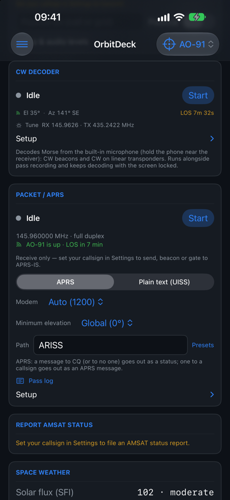
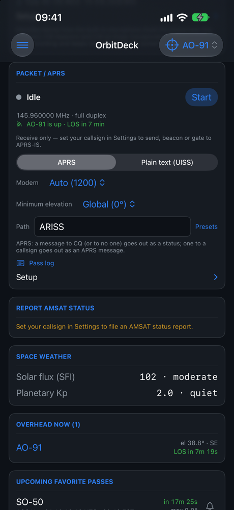

Digital Modes & Audio
OrbitDeck records passes, copies CW, works full-duplex FT4 on linear transponders, sends and receives packet and APRS, decodes SSTV and carries remote voice. Everything runs from the received audio of a USB audio interface, an Icom network radio (RS-BA1 audio), or the phone's built-in microphone. Packet can also use a KISS TNC instead.
Audio & the Home cards
Each audio feature is a card on Home: Pass recording, CW decoder, FT4 (full duplex), Packet / APRS, SSTV and Remote audio (voice). Audio comes from the first source available, in this order:
- A class-compliant USB audio interface (USB-C, or the Lightning camera adapter). Connect the radio's receive audio to the interface's input. To transmit FT4 or packet, also connect the interface's output to the radio's audio or data input.
- An Icom network radio (RS-BA1 audio, e.g. the IC-9700 over its LAN port) that's configured and connected on the Rig control (CAT) card. For a full walk-through, see FT4 on the IC-9700 over the network.
- The phone's built-in microphone, used only for cards you set to Always (see below). Hold the phone near the receiver's speaker.
The small print at the bottom of each card says which source it's using, for example "your USB audio interface (…)", "your network radio's audio" or "the built-in microphone (hold the phone near the receiver)".
Choosing which cards appear
Every card has its own setting in Settings → Audio features (Pass recording, SSTV decode, FT4, Packet / APRS, CW decode, Remote audio (voice)):
- Auto (default): the card appears only when a USB or network audio interface is connected.
- Always: the card is always shown. It still uses USB or network audio when available and falls back to the built-in microphone when not.
- Hidden: the card never appears, even with an interface plugged in.
Two cards have their own rules. With Auto, Packet / APRS appears when the selected satellite has a packet transponder (APRS, AFSK, packet, digipeater or G3RUH) and OrbitDeck can reach a radio, either through an audio interface or a chosen KISS TNC. It also stays up while packet is running. Remote audio needs a network radio and has no microphone fallback, because the phone's microphone is its transmit side.
What runs together
FT4, SSTV, packet and remote voice each take the radio's audio for themselves, so only one of them runs at a time. If you start a second one, the card says which feature is using the audio. Pass recording and the CW decoder only listen, so they run alongside any of them on the same capture.
Input & output levels
Each card has a live level meter with a visible track, so a quiet input still looks like a meter. It runs green, then yellow, then red near clipping. Gain sliders use a decibel scale with −/+ buttons that step 1 dB, and they read as a multiplier (1.00×). Input gain runs from 0.25× to 40×, so even a low line-level jack (such as an IC-821's ACC/DATA output) can be brought up. FT4's Output (TX) slider only attenuates, from 0.01× (−40 dB) to 1×. Each feature keeps its own input level, saved between launches, so changing one doesn't affect another.
Audio health
OrbitDeck watches the shared capture while a mode runs. If buffers stop arriving it shows Audio input stalled — restarting capture… and restarts the capture. If the USB interface is unplugged it shows Audio interface disconnected — reconnect it to resume. If the input stays at digital silence it shows Silent input — check the selected audio device/cable. These warnings appear on the recording, CW, FT4, SSTV and packet (built-in modem) cards.
Screen stays awake
While FT4, SSTV, packet, the CW decoder or a pass recording is running, the screen stays awake automatically on any screen of the app. Auto-lock comes back as soon as the last one stops. The separate Settings → Display → Keep screen awake on Home option works as before, for using Home as a live display.
Runs off the home screen and in the background
The audio modes, CAT and the rotator are app-wide. They keep running when you move to other screens, and the audio modes keep decoding and recording with the screen locked or the app in the background during a pass. If a connection drops while you're away (iOS reclaims Bluetooth and network sockets when an app is suspended), OrbitDeck reconnects when you return. Some transmitters deliberately stop when the app leaves the foreground; see Transmit safety.
Pass recording
The Pass recording card streams the received audio to a compressed AAC .m4a file tagged with the satellite and UTC time. AAC is about a fifteenth the size of uncompressed WAV, so a full pass is a few MB. Tap Record; the headline shows the elapsed time. After Stop it reads Saved to Log · m:ss until the next recording. Set the Recording level so the meter rides in the green. Recordings are listed on the Log screen with playback and share. Recording runs alongside FT4, SSTV, packet, the CW decoder or remote voice.
The card also has a Voice memo button. Speak a short note and it's saved with your recordings. OrbitDeck also adds a QSO stub to the Log (time, satellite, mode and frequencies) for you to complete after the pass. Memos use the built-in microphone, a headset or the USB interface's input.
CW decoder

The CW decoder card turns Morse in the received audio into text: CW beacons and telemetry, and CW contacts on linear transponders. It only listens, so it runs alongside pass recording, FT4, SSTV, packet or remote voice. To use it without an interface (built-in microphone), set Settings → Audio features → CW decode → Always.
Tap Start. The headline shows Searching 300–1200 Hz… until a tone is found, then Tracking 720 Hz, or Locked at 720 Hz once you lock it. Under it, the status line shows the pitch, speed (WPM) and SNR, plus a Lock button.
Two decoders: DeepCW and Classic
Choose the decoder under Setup → Decoder:
- DeepCW (default) is a neural network that reads the whole 400–1200 Hz band. It copies weak signals and uneven hand-sent fists that defeat timing-based decoders. Text arrives in bursts, about two seconds behind the audio, because the network reads a sliding 12-second window and commits text once it stops changing. It runs entirely on the phone.
- Classic is OrbitDeck's tone-tracking decoder. It locks onto one tone, filters it narrowly and times its dits and dahs. Its text appears character by character with no delay, and it has three extra settings: Filter bandwidth (50 / 100 / 200 Hz), Squelch (0–20 dB above the noise, default 8) and speed (adaptive 5–50 WPM by default, or a Fixed speed). Farnsworth-spaced code is handled.
The Classic demodulator always runs in the background. It drives the pitch, speed and SNR readouts and the spectrum strip, even when DeepCW writes the text. If the DeepCW model is missing from a build, Classic copies instead, and the Setup note says so.
When to choose Classic:
- The CW tone is outside 400–1200 Hz. DeepCW only hears that band, while Classic's search range can run from 200 Hz to 2000 Hz.
- You want to pick one signal out of several. Classic copies only the tone you tap on the spectrum strip or Lock, through its narrow filter. DeepCW reads the whole band whatever the readouts are tracking.
- You want text with no delay, or prosigns. Classic prints
<AR>,<SK>,<BT>,<KN>,<AS>,<BK>and<CL>from the full ITU table, and an unreadable character as*. DeepCW's alphabet is letters, digits and, . / ?.
Spectrum strip, tuning and AFC
A compact spectrum strip (a small waterfall) spans the search range, with the tracked pitch and filter width drawn in orange. Tap a trace to tune to that signal, or tap Lock to hold the pitch where it is. A locked pitch stops both the search and AFC. With AFC (follow drift) on (the default), the decoder follows the tone as Doppler or your dial moves it. The Search range (From / To) sets where it looks for a tone. The default is 300–1200 Hz.
Transcript and logging
The transcript scrolls in a monospaced panel and starts a new line after a pause. Turn on Timestamps (UTC) on each line to show when each line arrived. Copy puts the transcript on the clipboard, Share sends it to another app, and Clear empties it. With logging on, callsigns are underlined: tap one to put it in the Home Log QSO card with mode CW. Restore defaults resets the decoder settings, which are otherwise kept between launches.
Credit: DeepCW is by e04 (deepcw-engine), MIT License. OrbitDeck bundles the model converted to Core ML, with its own Swift version of the engine's reference pipeline. It's also credited in the app's Acknowledgments.
Full-duplex FT4

On a linear transponder you can hear your own downlink while you transmit, so OrbitDeck runs FT4 full duplex. It decodes the downlink and transmits the uplink on alternating 7.5-second slots. The FT4 (full duplex) card shows the slot countdown, a live waterfall with the TX-frequency marker, and a WSJT-X-style Band Activity list. The headline shows N decoded for the last slot (or No RX audio this slot). A live Doppler-corrected RX/TX frequency readout shows where to set the radio, so you can operate by hand even without CAT. Signal reports (SNR) are calibrated to read close to WSJT-X. FT4 encode and decode use the open-source, MIT-licensed ft8_lib.
IC-9700 owners: there's a step-by-step guide to working FT4 on the 9700 entirely over its network connection, with CAT and audio and no PC or USB interface: FT4 on the IC-9700 over the network.
Calling and answering
- Transmit enables your transmissions. It can't be turned on until your callsign is set (Set your callsign in Settings to transmit.). OrbitDeck uses My call from Log settings, otherwise the Settings → Operator identity callsign.
- Tap Call CQ to start calling (it starts FT4 if needed), or tap a decoded station to answer it. With Auto-seq on, the exchange (grid → report → RR73) and logging run automatically, with your report taken from their decoded SNR. Completed QSOs are logged with mode FT4.
- A NEXT TX panel shows the queued message, the sequence state, and when it goes out ("Sends in 4s · TX 1500 Hz on even slots"). It changes to TRANSMITTING while you're on the air.
- Late start: if you call or answer within 2 seconds of the start of one of your slots, OrbitDeck still transmits in that slot. It skips the part of the burst that has already passed, so the rest stays on the slot clock.
- The sequencer ignores loose ends. If a station repeats RR73 after the QSO is complete, it gets one more 73 without a duplicate log entry. A stray 73 or RR73 from a station you haven't worked doesn't start or log a QSO. Hashed
<…>callsigns are resolved from your own call and recent log calls. - With Auto-seq off, type a TX message. The field's example uses your own call and grid. The message goes out only when you press Return, so a half-typed message never goes on the air. Choose Transmit on even slots or odd.
- If your grid is missing, a warning says CQs and replies will go out without a locator.
Pounce and the CQ block list
Wait-and-pounce: enter one or more callsigns or grids in Pounce on (call or grid) and turn on Pounce. OrbitDeck waits and automatically answers a matching CQ (or that station calling you) once. Matching decodes are tagged Target. Long-press any decode for Work, Pounce on this station, or Block from auto-reply / Allow auto-reply. Stations on the CQ block list (in Setup) are never answered automatically while you call CQ, but tapping their decode still works them.
Band Activity
Each row reads like WSJT-X: UTC time · SNR (dB) · DT · audio frequency · message. DT follows the WSJT-X convention: the signal's time offset from the slot start. Colors mark CQ (green), stations calling you, your own TX (orange) and your signal heard back through the transponder (self, cyan). Shading marks calls not yet in your log (new) and VUCC grids not yet in your log (grid). Tags mark pounce Targets, decodes found after subtraction (sub) and decodes from a deep re-decode (deep). The All / Me & my echoes filter narrows the list to messages to you, your transmissions and your echoes.
Decoding weaker stations
- Subtract decoded signals (find weaker ones) (on by default): after the first pass, decoded signals are removed and the slot is decoded again (a second and third pass), finding weaker stations under strong ones.
- Decode again (deep): re-decodes the previous slot harder, using more candidates, 50 LDPC iterations and a range of chirp slopes for stations whose uplink slides. Tap the button under the waterfall or long-press the waterfall. New messages are merged into the list and tagged deep.
- Hide decodes with |DT| over 1.5 s (on by default) drops implausibly timed decodes.
- The decoder's sync-candidate and block counts appear in Setup as a diagnostic line, while FT4 runs.
Waterfall
The waterfall spans 0–3 kHz with an orange TX marker at your transmit frequency. It tracks the noise floor quickly and averages 2–4 FFT frames per line. In Setup you can choose 12 / 24 / 48 s of history (12 s by default, the smoothest) and turn on Slot lines with UTC time. Set your TX freq (300–2700 Hz) in Setup, or tap Clear spot to pick a quiet one.
Tune
Tune sends a steady carrier at your TX audio frequency for up to 10 seconds so you can set drive and ALC. It goes through the same transmit path as a burst, so it has the same requirements:
- FT4 is running, Transmit is on and your callsign is set.
- The transponder isn't FM-only or receive-only.
- No burst is on the air.
When Tune is dimmed, the line under it says why (e.g. Turn on Transmit to tune.). Tap Stop at any time to unkey. Tapping Tune cancels a slot that was already armed to transmit. There's no elevation check, because levels are often set into a dummy load or before AOS. The TX level meter shows during Tune.
Safety checks
- TX watchdog (on by default, 6 minutes, adjustable 2–15). It stops transmitting (CQ, auto-sequence or a repeated message) when nothing addressed to you has been decoded for that long, and a banner says so. Turn on Transmit or call CQ to resume.
- No FT4 on FM transponders. FT4 refuses to start on an FM-only transponder, because an FM repeater carries one signal at a time and FT4's continuous duty would block everyone else. The check also runs before every burst, so switching to an FM transponder mid-session stops transmitting. Linear transponders, AO-7 included, are never blocked.
- Full duplex only. FT4 won't start while the radio runs half duplex (split VFO or same-band transmit hold) for this satellite.
- RF power reminder. When CAT can read the radio's power setting (CI-V, Kenwood, rigctld) and it's above about 30 W, a reminder asks you to turn it down. It never blocks transmitting. A permanent banner reminds you that FT4 runs at nearly 100% duty cycle.
Data mode and audio levels
With Settings → Audio features → Use data mode for FT4 on (the default), starting FT4 on a connected radio selects its data sub-mode, so audio uses the rig's data port (ACC, USB or the network stream). Examples are USB-D/LSB-D over CI-V and PKTUSB/PKTLSB via rigctld. Stopping FT4 restores plain SSB. Data mode is only set during an FT4 session and is reapplied if a network radio reconnects mid-pass. Turn it off if you feed audio through the mic or headphone jack. Set Input (RX) and Output (TX) under Setup & audio levels, so the input meter peaks in the green on a decode and TX stays modest.
Doppler correction (on by default)
On a linear transponder, the downlink Doppler drift is the same for every signal, so OrbitDeck removes it from the audio itself. Two toggles in the FT4 setup, Doppler-correct RX audio and Doppler-correct TX audio, are on by default. RX removes the drift from each received 7.5-second slot before decoding (a de-chirp). TX adds the opposite drift to your transmitted burst (a pre-chirp), so the signal the satellite hears stays on one frequency. Both need a configured transponder.
While FT4 is running with a connected CAT radio, OrbitDeck holds the dial steady and only retunes at slot boundaries, and only for the FT4 transponder. Retuning mid-slot would shift the whole burst and break the decode. Because the dial doesn't move during the slot, the audio correction is what removes the drift within the slot. For exactly how this works, and why the transmit correction depends on whether your transponder inverts, see Doppler compensation, in depth below.
Automatic transponder calibration (opt-in)
On a linear transponder your own signal comes back at about the audio frequency you transmit. While you work FT4 full duplex, OrbitDeck can measure where your own decoded signal actually lands and add the difference to the saved calibration for this transponder. It refines the calibration a little on every decode of your own signal, so your signal and everyone else's line up better as the pass goes on. It's opt-in (Settings → Audio features → Auto-calibrate transponder from FT4) and applies to linear transponders only. Each correction is small and capped, so a single stray decode can't throw the calibration off. You can review or clear the result on the Calibrations screen.
PSKReporter reception reports
OrbitDeck can upload the FT4 stations it decodes to PSKReporter so they show on its public map. This is opt-in: turn on Settings → PSKReporter → Upload FT4 reception reports (your callsign and grid must be set). The reported frequency is the downlink frequency plus the decode's audio offset. The downlink frequency is the Doppler-corrected dial from CAT when connected, otherwise the transponder's downlink center plus your saved calibration. Nothing is sent unless you enable it; see the privacy policy.
Packet & APRS

The Packet / APRS card works APRS and UISS-style packet through satellite digipeaters and the ISS. It sends messages, positions and beacons, logs every frame per pass, and shows heard stations in a list and on a map.
Connections
Choose one under Setup → Connection:
- Built-in modem: 1200 AFSK or 9600 G3RUH, through your audio interface or network radio. The Modem menu is per satellite. Auto picks 9600 when the satellite's packet transponder is 4800 baud or faster or is marked G3RUH/9600. 9600 baud needs the radio's 9600 data port (flat, wide receive audio and direct modulator input) and the wide FM filter; speaker and mic audio are too filtered to decode or send it. Setup has TX delay, TX audio level, Send 3 s test signal and Off-frequency decoders (±175/±350 Hz, 1200 only), which catch stations slightly off frequency from leftover Doppler. The 9600 decoder follows the offset itself. With CAT connected, Put the radio in data mode (CAT) selects e.g. FM-D while packet runs. Set about 3 kHz deviation: send the test signal into a dummy load, then raise the level from low until the digipeated copy decodes.
- BLE KISS: the radio's own TNC through a Bluetooth LE KISS adapter. The Kenwood TH-D74/D75 only offer Bluetooth Classic, which iOS can't open, so they need the B.B. Link adapter (or a compatible ESP32 or Raspberry Pi bridge). Set the radio's KISS interface to Bluetooth (menu 983). With Tune the radio to the packet frequency (B.B. Link) on, OrbitDeck puts the radio on the satellite's packet frequency. The adapter serves one app at a time, so CAT over the same adapter isn't available while packet runs.
- KISS TCP: KISS over TCP to Direwolf (default port 8001), the UZ7HO soundmodem (8100) or a network TNC on your LAN. That software runs the modem and keys the radio, and OrbitDeck reconnects if the link drops.
Receive-only monitoring
You don't need a callsign to listen. Without one, packet starts in receive-only mode (Receive only — set your callsign in Settings to send, beacon or gate to APRS-IS.). Every transmit path checks for a callsign itself: sending, macros, beacons, the test signal and the satgate login.
Per-satellite setup
Each satellite keeps its own Format, Modem, Minimum elevation and Path. The path defaults to ARISS, with presets ARISS, APRSAT, WIDE2-1, ARISS,WIDE2-1 and Direct (no path). Formats:
- APRS: a message to CQ (or to no one) goes out as an APRS status; a message to a callsign goes out as an APRS message, numbered for acks if you request them.
- Plain text (UISS): UISS-style unproto text. The addressee is the AX.25 destination (CQ by default) and your text is sent as typed, e.g.
N0CALL-6>CQ,ARISS:CQ FN31.
Station settings include the SSID (shown as "SSID -6", the usual satellite SSID; or None), Position precision (Exact, ≈ 200 m, ≈ 2 km (default), ≈ 20 km or Grid square center) and a Position comment.
Sending, macros and acks
Type a To call and a Message and tap Send, or tap a quick message. To fill in To, tap a frame in the monitor, Reply on a heard station, or a station on the map. Quick messages are editable macros (up to 12) with placeholders {MYCALL} {MYGRID} {MYGRID4} {CALL} (the To field) and {HEARD} (calls heard this pass, like UISS's MHeard). A macro of just {POSITION} sends your position, and a macro starting with CQ always goes to CQ. Number my messages (request acks) adds message numbers. Resend unacknowledged messages (2×, 30 s apart) then retries automatically, and the monitor shows awaiting ack, retry 1/2, acked or no ack. Retries are dropped if the satellite changes, because the old path is in the frame, and they wait for a known elevation. Acknowledge messages to me is off by default, because every ack uses digipeater time on a busy pass.
Beacons and minimum elevation
- Timed beacon: off, or every 1–30 minutes while the satellite is up.
- Beacon sends: Position, Status text or Alternate (taking turns). Status text uses the same placeholders and goes out as an APRS status or as plain text to CQ, following the satellite's format.
- Beacon when the satellite is first heard: one position as soon as the first digipeated frame of a pass arrives, then the timed beacon continues.
- Automatic beacons are never closer than 1 minute apart.
- Minimum elevation (global, with a per-satellite override) applies to sending, beacons and message retries. With Block sending below the minimum elevation on (the default), the card shows when sending will be allowed again ("Below the horizon · AOS 14:05 (in 12 min)").
Monitor and filters
The Monitor tab lists the latest frames, with the full via path. A * marks the digipeater that repeated a frame, and satellite digipeaters (RS0ISS, ARISS, PSAT and others) are highlighted. Tags mark TX, MY DIGI (your frame digipeated, with the delay), TO ME, CQ, OBJ, ITEM, WX, STS, BCN and TLM. Filter by Call or Text, or from the filter menu choose Only my traffic, Digipeated only, Hide beacons, Hide telemetry or Hide status. Raw TNC2 shows the frames as raw text. OrbitDeck decodes APRS objects, items (including killed ones), weather (on its own or inside positions) and third-party packets. The card's status lines show Channel busy, Heard yourself via the satellite, and digipeat stats (sent, digipeated with success %, median delay, and this pass's frames, stations and frames per minute).
Stations and the APRS map
The Stations tab lists heard stations with their APRS symbol, grid, distance and bearing, frame count, last-heard time and any weather. Tap Reply to address a station or Log to log the contact (mode PKT). The Map tab plots heard stations by APRS symbol, with objects and items, your own station and the satellite's live footprint. Show This pass or All heard, and tap a station to put its call in To. With Log QSOs automatically on (the default), OrbitDeck logs a PKT QSO once you and a station have each sent the other's call and the exchange is confirmed. A station already logged on this satellite in the last 30 minutes isn't logged again.
Alerts and speech
Optional Alerts for A message to me, A watched callsign or word (a watch list such as "W1AW, RS0ISS, field day") and My frame was digipeated. You get a haptic and a sound while OrbitDeck is open, or a notification in the background, and the same alert repeats at most once a minute. Read messages to me aloud (and Also read bulletins) speaks them. Sounds and speech are skipped whenever the phone's audio output could reach the radio, including any time a USB audio interface is connected, and never play during transmit.
Pass log
Every frame heard or sent while packet runs is saved, one session per pass (the last 30 are kept). Open Pass log on the card for the session list (the running one is marked LIVE). Each session shows statistics: frames and stations heard, frames sent, digipeated with success %, median digipeat delay, frames per minute and the UTC time span. It exports as Text (TNC2) (UISS-style) or CSV.
Satgate (RF → APRS-IS)
Satgate: forward heard packets to APRS-IS is off by default. When on, it forwards packets heard through the satellite to APRS-IS (aprs.fi and others), with your callsign as the gateway (qAR). It's receive-only: nothing from the Internet is ever transmitted. It never gates your own frames, duplicates within 30 s, or packets marked NOGATE, RFONLY or TCPIP. Third-party packets are unwrapped first. Enter your APRS-IS Passcode, which is stored in the iOS Keychain. The server defaults to rotate.aprs2.net:14580 and the login SSID to -10. The status line shows the connection, whether the server verified your passcode, and how many packets were gated. Reconnect applies a new passcode. The satgate runs only while packet runs, in the foreground or in the background with audio.
Channel access and the PTT watchdog
Duplex is Automatic, Half duplex or Full duplex. Automatic is full duplex only on a crossband transponder, where you can hear your own downlink. Half duplex waits for a clear channel, using Persistence, Slot time and Max wait for a clear channel, and ignores your own echo. The PTT watchdog (default 10 s, up to 60) unkeys any transmission that runs too long. OrbitDeck keys over CAT when it can; otherwise use VOX. Keep transmissions short and infrequent: the channel is shared by everyone in the footprint, and a 1-minute beacon is the accepted minimum.
SSTV

The SSTV card decodes pictures live, and the image builds as it arrives. Tap Start; the headline shows Idle, Listening… or the detected mode. The Mode picker defaults to Auto-detect (VIS), or you can force a mode. Supported modes include Robot 36/72, Scottie S1/S2/DX, Martin M1/M2, Wraase SC2-180, the full PD series (PD 50/90/120/160/180/240/290), and the 128-line Martin M3/M4 and Scottie S3/S4, which are detected from the VIS header. The decoder locks onto the sync pulse on every line, so the picture stays aligned across long modes.
Weak-signal robustness
- Per-satellite expected modes. OrbitDeck knows which modes common SSTV satellites send (the ISS: PD 120, PD 180, Robot 36; UmKA-1 and SakhaCube: Robot 36). The card lists them under the Mode picker.
- Damaged-VIS fallback. When the VIS header is damaged, or you join a picture mid-transmission with no header at all, the decoder chooses among the expected modes by line timing. A picture picked up partway is placed at the bottom of the frame, where its lines belong.
- Robot 36/72 guard. A weak Robot 36 header often reads as Robot 72. The detected mode is checked against the measured line timing over the first lines and corrected.
- Repairs. Noisy lines (garbled sync, FM clicks) are rebuilt from good neighboring lines. Chroma smoothing lightly smooths color speckle in Robot and PD pictures.
- Combined copies. When the same picture is repeated during a session, OrbitDeck saves a combined copy (combined ×3) alongside the originals, which cleans up noise. A newer combination with more copies replaces the earlier one.
- Partial captures are saved and labeled (partial).
Auto start/stop by elevation
Turn on Auto start/stop by elevation and set Start above (0–60°). The card shows Armed, starts decoding when the satellite rises above that elevation, and stops after it sets. Keep OrbitDeck open while armed, because iOS may suspend it in the background before audio starts.
Doppler-aware decoding and calibration
A fast LEO on 70 cm shifts the whole audio band during the pass, which slants the picture and tints its colors. Auto-tune (Doppler) (on by default) reads each line's sync pulse to measure that shift and correct it continuously. With rig control connected, the app also tells the decoder about its own Doppler tuning steps, so a mid-image dial step doesn't tear the picture. This matters most for the long PD modes. Under Setup & calibration you can set the Input level before decoding, along with slant, tuning, H-shift, contrast and saturation, and Reset calibration. Each adjustment redraws the current image immediately.
Decoded images are saved to the SSTV Images screen (Operating Tools). There you can view them full screen, share, delete (one or several) or export to Photos. Fix image (slant / color) straightens a leftover slant and adjusts the picture's brightness, contrast and saturation. Re-decode from recording rebuilds the image from the saved pass audio with different slant and Auto-tune settings, which recovers geometry and the Doppler color tint that a picture-only edit can't. Both save a new copy and leave the original untouched.
Remote voice
The Remote audio (voice) card turns the phone into the radio's speaker and microphone for an SSB or FM voice QSO. It needs an Icom network (RS-BA1) radio connected over CAT. Without one, Listen is disabled and the card says why. With a USB interface, iOS can capture only one input at a time, and that input is the radio's receive audio, so the phone's microphone isn't available to transmit. Use earphones to avoid feedback.
Tap Listen, then hold HOLD TO TRANSMIT to talk; it reads ON AIR — release to stop. The transmit safeguards:
- The radio is keyed only after the microphone audio is flowing, so you never send an empty carrier. If audio can't start, nothing is keyed.
- A single transmission is limited to 3 minutes. Release and press again to keep talking.
- It unkeys when you lift your finger, when the touch is interrupted (gesture canceled), when the control leaves the screen, and when the app leaves the foreground (Control Center, a call, the lock button, the app switcher).
- It refuses to key on a receive-only transponder. Without CAT PTT, it sends microphone audio only, for VOX.
Remote voice is exclusive with FT4, SSTV and packet, but pass recording runs alongside. The network audio path is experimental, so validate it on your radio.
Transmit safety
FT4, Tune, packet, remote voice and the rigctld network server all key the radio through one PTT authority:
- One transmitter at a time. If another feature is keyed, a request is refused with a reason (Transmitter in use by packet — not keyed.). Key and unkey requests are handled in order, so an unkey is never overtaken by a later key.
- Maximum key times. Every owner has a backstop above its own limit (about 30 s for an FT4 burst, 20 s for Tune, the packet watchdog plus 5 s, and a little over 3 minutes for remote voice and network clients), and nothing stays keyed longer than 4 minutes.
- Stop always unkeys, including a key that hasn't gone out yet. So do Stop all, CAT disconnect and a dropped link. If an unkey can't be confirmed, OrbitDeck warns you to check the radio and retries the unkey when it reconnects.
- Background: FT4 and packet sessions keep transmitting with the screen locked (the FT4 sequence, packet beacons and acks). Remote voice, Tune and network-client keys are released when the app leaves the foreground.
- Transmitting is refused on a transponder with no uplink (receive only).
For the full picture, including network PTT and client approval, see Rig Control: Transmit safety.
PTT for FT4 and packet
When a CAT radio is connected, OrbitDeck keys transmit over CAT automatically: CI-V, Yaesu, Kenwood, rigctld and Icom network. If your radio has no CAT PTT, use VOX or key by hand. The FT4 card shows a prominent TRANSMIT NOW — key your radio (VOX / manual PTT) indicator at the start of each of your slots. A KISS TNC (BLE or TCP) keys its own radio.
Doppler compensation, in depth
How OrbitDeck keeps an FT4 burst readable through the fast Doppler shift of a low-earth-orbit pass. This section is for the curious; you don't need any of it to operate.
Why Doppler breaks FT4
An FT4 transmission is a continuous-phase 4-GFSK burst: 105 symbols at a 0.048 s symbol period (≈4.48–5 s on the air), with the four tones spaced 20.83 Hz apart. The decoder recovers each symbol by finding which tone bin holds the energy, coherently, across the whole burst. If the signal's frequency slides during the burst, each tone smears across bins and the decode collapses.
On a LEO pass the Doppler shift is largest and changing fastest near closest approach (TCA). On 70 cm the total shift swings several kHz across a pass; the rate near TCA can be well over 10 Hz/s. Over a single ≈5 s burst that's tens of Hz of drift — several tone spacings. Left uncorrected, nobody decodes you (and you can't decode the bird).
Two things move: downlink and uplink
- Downlink — the frequency you receive drifts. On a linear transponder this drift is common to every signal in the passband: the whole band slides together.
- Uplink — the frequency the satellite receives from you drifts, so without correction your signal walks across the transponder passband as others hear it.
Both come straight from the ephemeris. With range rate ṙ (positive = receding) and carrier f, the shift is −f·ṙ/c. OrbitDeck samples this from the same SGP4 propagator that drives the rest of the app.
Why not just tune the radio faster?
Two reasons. A CAT dial over CI-V/BLE can't be nudged smoothly or often enough to track a 10 Hz/s slope. More fundamentally, any re-tune during the burst shifts the entire coherent signal — the very thing the decoder can't tolerate. So OrbitDeck splits the labor:
- Coarse, between slots: the CAT dial is stepped once per 7.5 s slot boundary and then held rock-steady through the slot. (This is the "hold the dial, step at boundaries" behavior above.)
- Fine, within the slot: the smooth residual drift is removed in the audio domain, where it can be a continuous chirp instead of a staircase.
Over one ≈5 s burst the drift is very nearly linear, so a straight-line (constant-slope) correction is more than good enough. OrbitDeck samples the ephemeris shift at the slot start and one burst-length later and uses the slope between them.
Receive: de-chirping the slot
Because the downlink drift is common to the whole passband, one correction fixes every signal at once. OrbitDeck takes the recorded 7.5 s slot, forms its analytic (complex) signal with a Hilbert transform, and multiplies by a complex exponential whose frequency ramps at the negative of the downlink slope — a de-chirp — then hands the flattened audio to the decoder. The effect is dramatic near TCA: toggling Doppler-correct RX audio off there visibly thins out the decodes.
Transmit: pre-chirping the burst
The goal on transmit is that the frequency the satellite receives holds still, so you sit on one spot in the passband for everyone listening. With the dial frozen for the slot, that has to be done in the transmitted audio. The sign of the correction depends on which sideband the uplink uses:
- USB uplink (non-inverting transponder): transmitted RF = dial
+audio. To cancel a rising uplink Doppler the audio must fall — offset= −slope · t. - LSB uplink (inverting transponder): transmitted RF = dial
−audio, so the audio→RF mapping flips and the sign of the correction flips with it — offset= +slope · t.
Starting the burst on time
FT4's signal occupies only ≈5 s of the 7.5 s slot, leaving dead air at the end. OrbitDeck uses that tail: on a transmit slot it steps the dial and keys PTT about half a second before the boundary, so the burst begins right on time instead of after the CAT round-trips. Receiving stations see this as your DT — the offset of your signal from the slot start — and it should sit well under a few tenths of a second.
Putting it together
On a connected CAT radio, one FT4 cycle looks like this: at the slot boundary the dial steps to the new coarse Doppler and then holds; on receive slots the recorded audio is de-chirped and decoded; on transmit slots PTT is pre-armed in the previous slot's dead air and the burst is synthesized with a sideband-correct pre-chirp so the satellite hears a steady tone. The dial handles the big, slow, between-slot motion; the audio handles the small, smooth, within-slot motion. Neither double-corrects the other, because the dial never moves inside a slot.
Maturity & testing
SSTV and FT4 decoding from a USB audio interface have been validated on the air since 0.9.14. The 1.1 additions have been tested against synthesized, noisy and drifting signals and in the simulator. These still need on-air confirmation, and reports are especially welcome:
- The CW decoder (DeepCW and Classic) on a real downlink.
- FT4 subtraction, deep decode and DT, the RF-power read on each radio, and Tune keying.
- 9600-baud packet working with other stations' equipment.
- SSTV thresholds and Martin M3/M4 and Scottie S3/S4.
- Data-mode switching (FM-D, PKT) on each radio.
The Icom network-audio path is experimental and best checked on your own radio. It reconnects automatically if the RS-BA1 link drops mid-pass instead of going silent for the rest of the pass.
Permissions & privacy
Audio is captured only while you record, decode or make a memo, and it stays on your device. CW decoding, including the DeepCW network, runs on the phone. SSTV images are saved in the app, and you choose when to export them to Photos. Packet alerts ask for notification permission the first time you turn one on. Two features send data off the device, and only if you turn them on. PSKReporter uploads the FT4 stations you decode, with your callsign and grid. The packet satgate sends the packets you hear, with your callsign and APRS-IS passcode, to the APRS-IS server you choose. See the privacy policy.